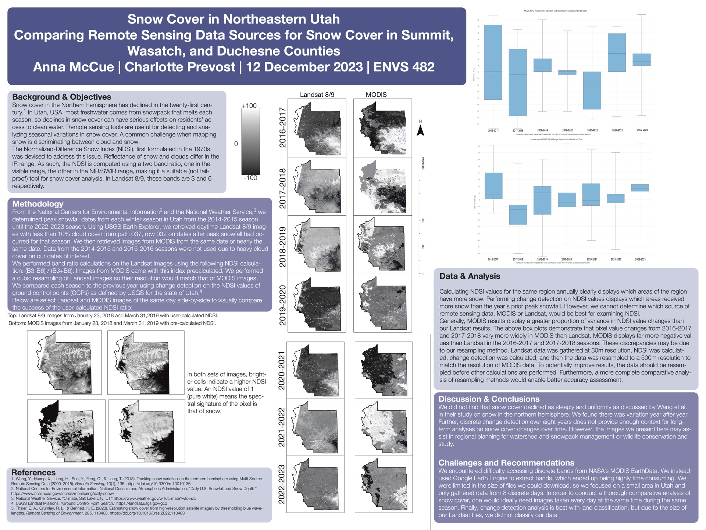

Back to portfolio
Alps Snow Cover Trend Analysis
Remote sensing project focused on multi-year snow-cover dynamics in alpine regions.

Impact: highlights multi-year snow-cover change patterns relevant to climate and water-resource risk.
Project focus
- Build a reproducible workflow for snow-cover trend analysis across years.
- Compute trend and anomaly signals that support climate and water-resource narratives.
- Produce clear visual outputs suitable for technical and non-technical audiences.